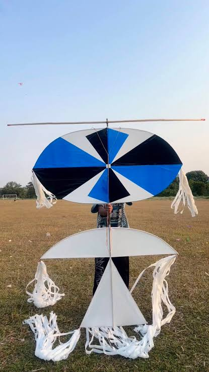
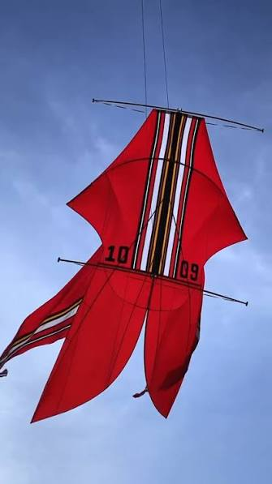

Tiga layangan yang dibahas
Layangan tradisional Bali yang paling sering muncul di festival itu bebean, janggan, dan pecukan. Di sini aku bahas janggan dan bebean, ditambah satu layangan lagi, koang, yang aku masukin buat pembanding.
Janggan (Bali)

Janggan dikenal dari ekornya yang panjang banget. Di festival, ada janggan yang ekornya lebih dari 100 meter. Nama janggan sendiri sering dikaitkan dengan naga.
Koang (Jakarta)

Koang dikenal sebagai layangan dari Jakarta, bentuknya agak lebar dengan hiasan rumbai di sisi-sisinya.
Bebean (Bali)

Kata "be" dalam bahasa Bali artinya ikan, jadi bebean itu layangan yang bentuknya mirip ikan. Biasanya ekornya bercabang dan layangannya besar.
Tabel ringkasan
| Nama | Daerah | Bentuk | Ciri yang paling kelihatan |
|---|---|---|---|
| Janggan | Bali | naga / burung | ekor kain sangat panjang |
| Koang | Jakarta | lebar, bersayap | rumbai di sisi layangan |
| Bebean | Bali | ikan | ekor bercabang |